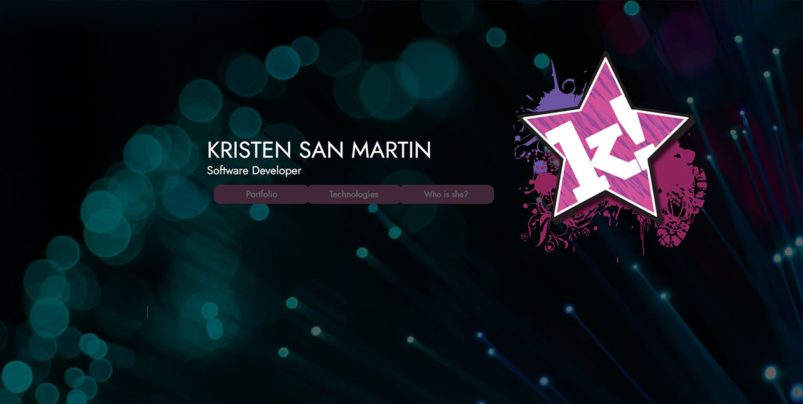

My Original Portfolio

Project information
- Project Name : My First Portfolio
- My Role : UI / UX
- Category : Original Portfolio | UI / UX
- Tech : HTML5 | JQuery | CSS | Bootstrap5
- + View on GitHub
Why didn't I use this portfolio instead?
I went with a template so that I could get something nice to showcase my work as a Full Stack Web Developer up and running immediately after graduation and not having to worry about designing and building out my own flashy sections and animations before the rest of my work can be seen. I am still very pleased with the result of my original portfolio and I may continue with it in the future but there was a reason I didn't jump on building this out fresh after graduation.
Technologies Used:
- Used Javascript and JQuery to iplement flashy animations and create the appearance of an SPA which adds smooth and visually pleasent transitions through the website.
- Utilized the Bootstrap5 to implement information modals adding a classy modern feel ot the UX